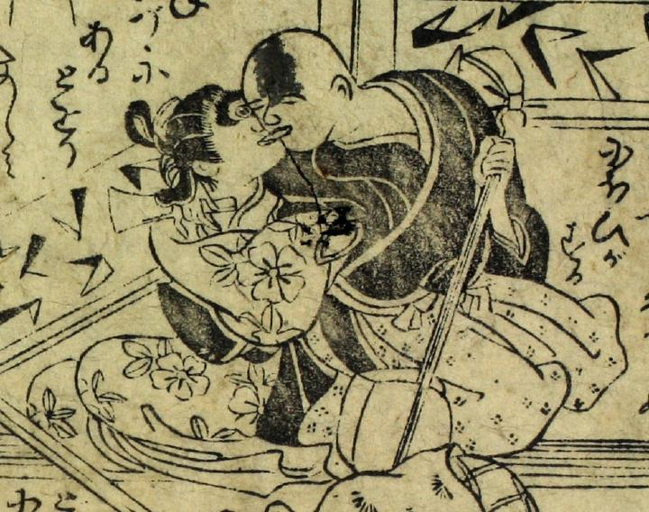

三味線を持った僧形の男と彼に抱かれている女。女は、顔の中央の丸く見開いた目で男を見つめている。
出典：親書誌：U426_nichibunken_0092：化物絵本；バケモノエホン／日付：2005／資源識別子：U426_nichibunken_0092_0003_0006
Copyright (c)2010- International Research Center for Japanese Studies, Kyoto, Japan. All rights reserved.